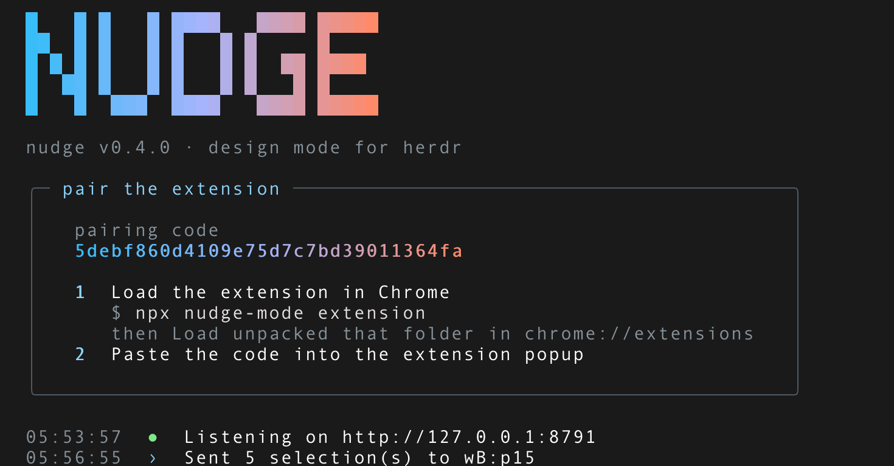

Start the daemon
One command in a herdr pane. It prints a pairing code, says where the extension lives so Chrome can load it, and then sits there listening on 127.0.0.1:8791 for the rest of the session. Everything the browser sends goes through it.
